Traduarte
Tradução artística em Libras para teatro, música, festivais e audiovisual, com preparação de roteiro e presença cênica.
Tradutora · Intérprete · Traduartista de Libras
Traduartista habilitada para o contexto artístico: levo a Libras ao palco com corpo, ritmo e emoção, há mais de 10 anos acessibilizando espetáculos, festivais, eventos e conteúdos audiovisuais.

Sou tradutora, intérprete e traduartista de Libras há mais de 10 anos, período em que adquiri ampla experiência e habilidades na tradução e interpretação simultânea, atuando tanto em eventos presenciais quanto em plataformas de transmissão remota.
Sou graduada em Pedagogia, especialista em Tradução e Interpretação da Libras, mestranda na UTFPR e possuo certificações de proficiência emitidas pelas bancas CAS-PR e FENEIS.
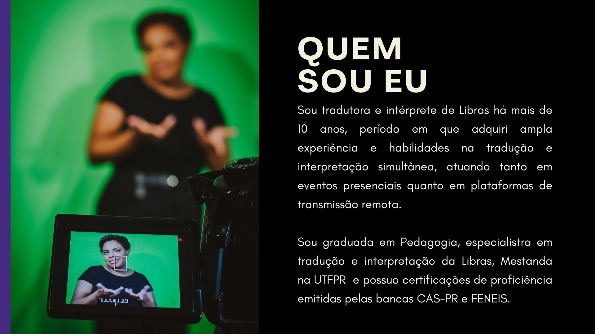
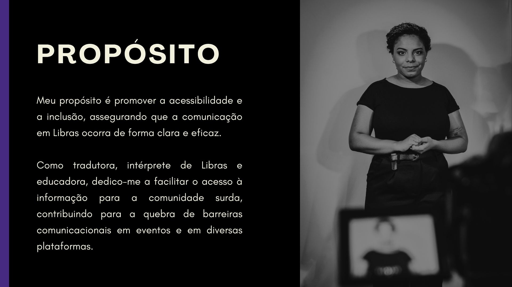
02 Propósito
“Promover a acessibilidade e a inclusão, assegurando que a comunicação em Libras ocorra de forma clara e eficaz — facilitando o acesso à informação para a comunidade surda e contribuindo para a quebra de barreiras comunicacionais.”
Destaque
Mais do que traduzir palavras, a traduartista dá vida à obra em Libras. Fabíola leva para as mãos, o rosto e o corpo a poesia, o humor, a música e a emoção de cada espetáculo. Com formação para atuar no contexto artístico, une expressão, ritmo e presença de palco para que o público surdo não apenas acompanhe o que acontece, mas sinta e viva a experiência artística por inteiro.
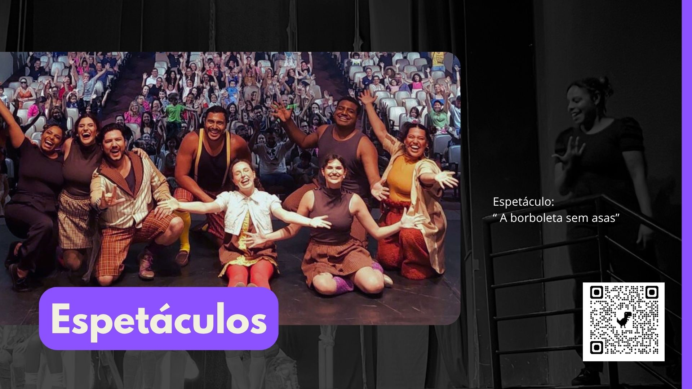
Tradução artística em Libras para teatro, música, festivais e audiovisual, com preparação de roteiro e presença cênica.
Interpretação simultânea e consecutiva em eventos presenciais e transmissões remotas.
Pedagogia, pós-graduação em Tradução e Interpretação de Libras e mestrado em andamento na UTFPR; ensino de surdos e materiais acessíveis.
Certificações reconhecidas pelas bancas CAS-PR e FENEIS.
Domínio de ferramentas e plataformas digitais para interpretação remota e produção de conteúdos acessíveis.
Tradução fiel e acessível ao público-alvo.
Atuação em diferentes contextos e ambientes, presenciais ou online.
Confidencialidade e imparcialidade, seguindo o Código de Ética do TILSP.
Respeito às necessidades da comunidade surda e à diversidade linguística e cultural.
Languages Idiomas · Assis-SP
Visual Libras — Inclusão e Acessibilidade para Surdos · Londrina-PR
Universidade Estadual do Norte do Paraná (UENP) · Cornélio Procópio-PR
Secretaria de Estado da Educação do Paraná (SEED) · Cornélio Procópio-PR
Universidade Tecnológica Federal do Paraná (UTFPR) · Londrina / Cornélio Procópio-PR
Associação das Pessoas com Deficiência do Estado de São Paulo (ADPESP) · Assis-SP
Projeto Mulheres Surdas em Ação (MSA) · RJ
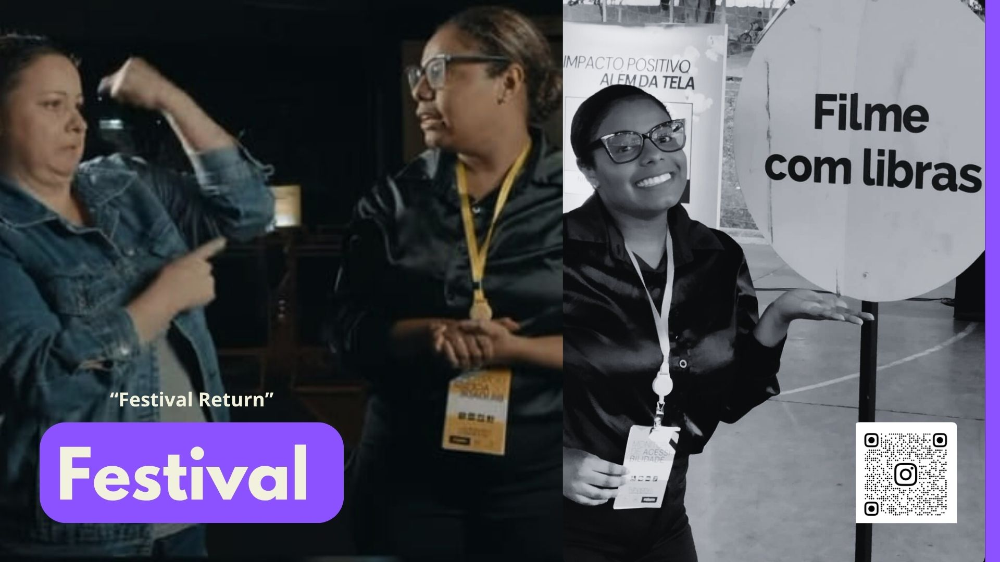
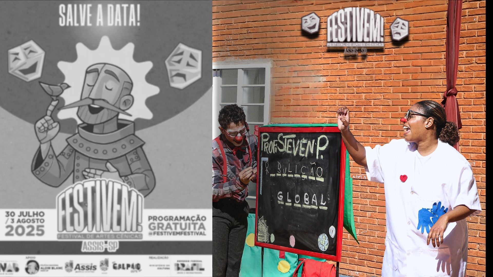
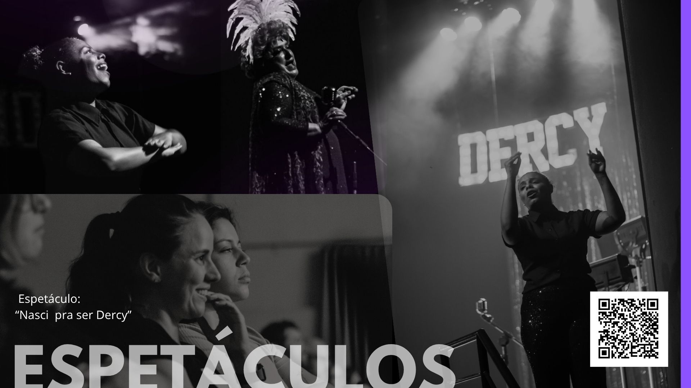
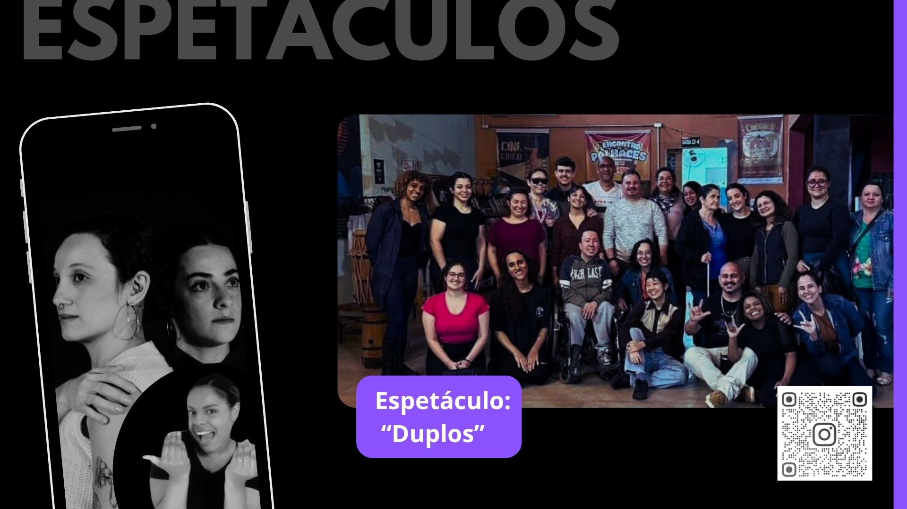
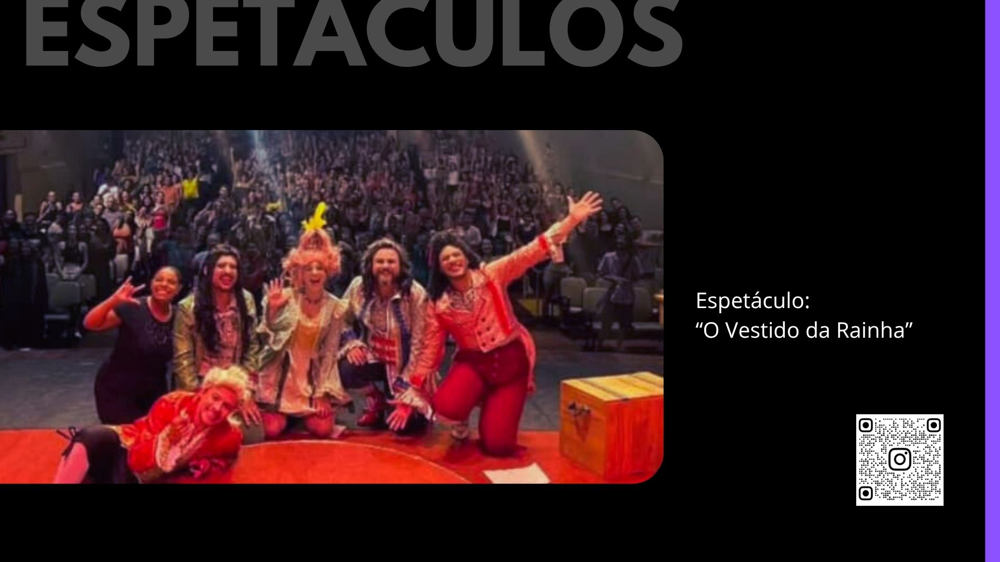
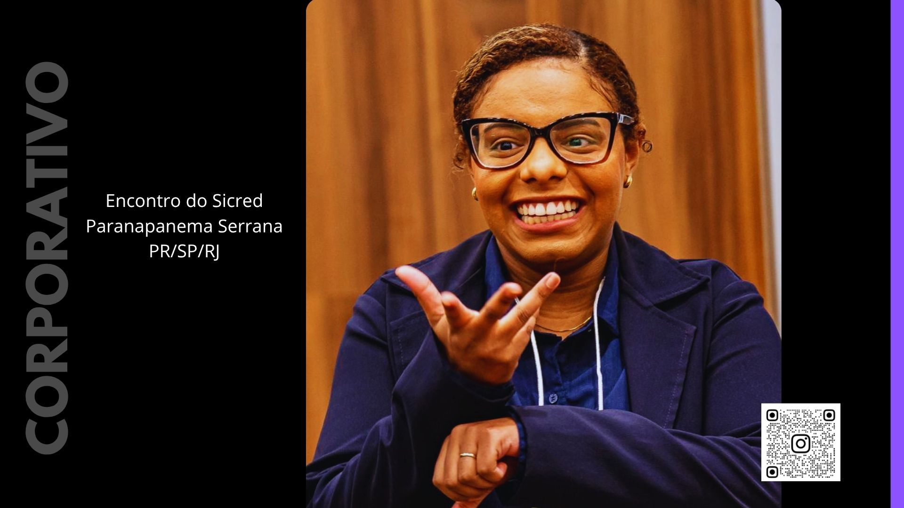
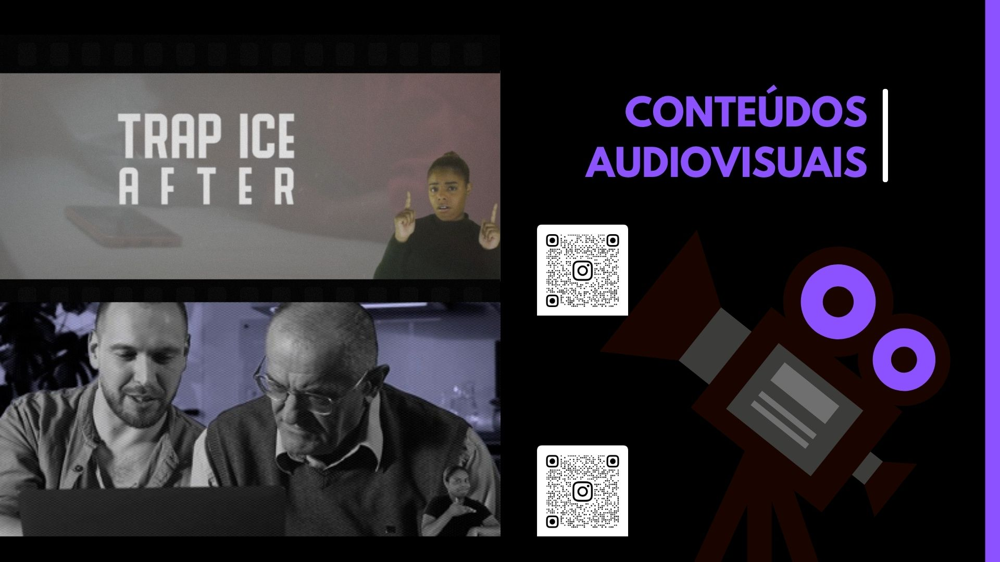
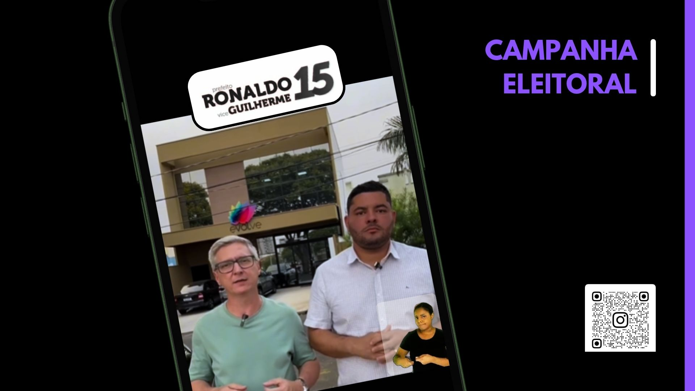
Conte sobre seu evento ou projeto — respondo com disponibilidade e orçamento.